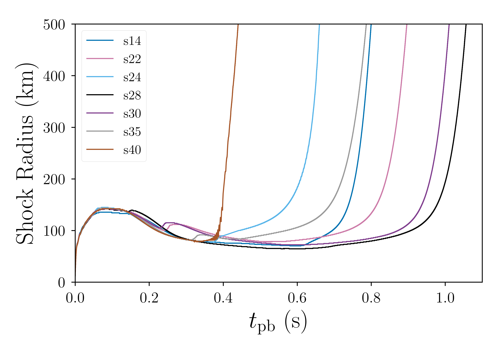
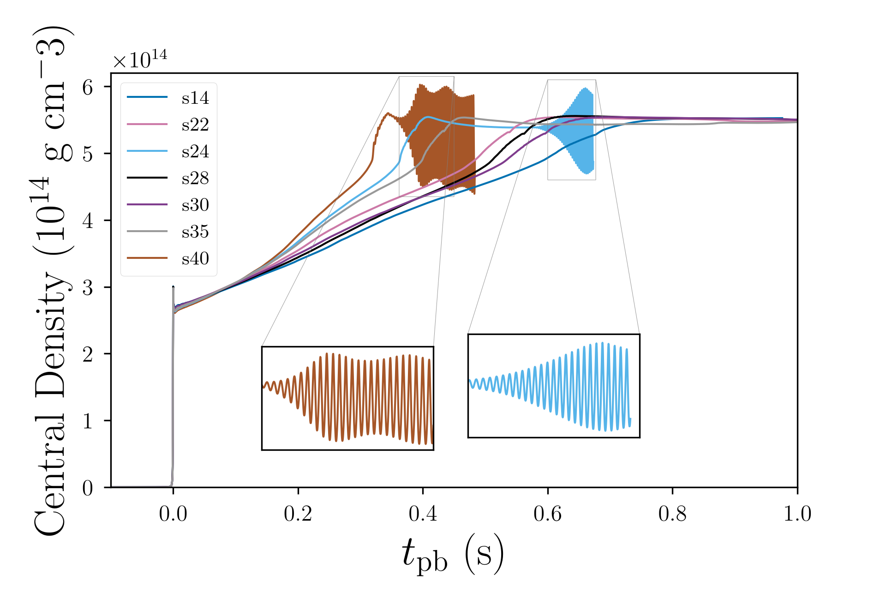
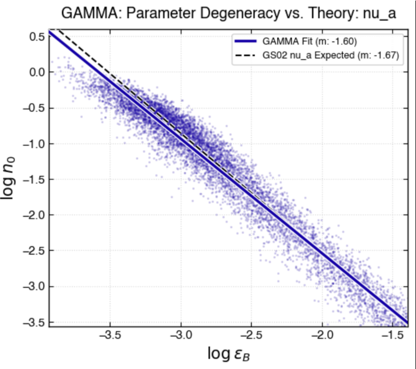
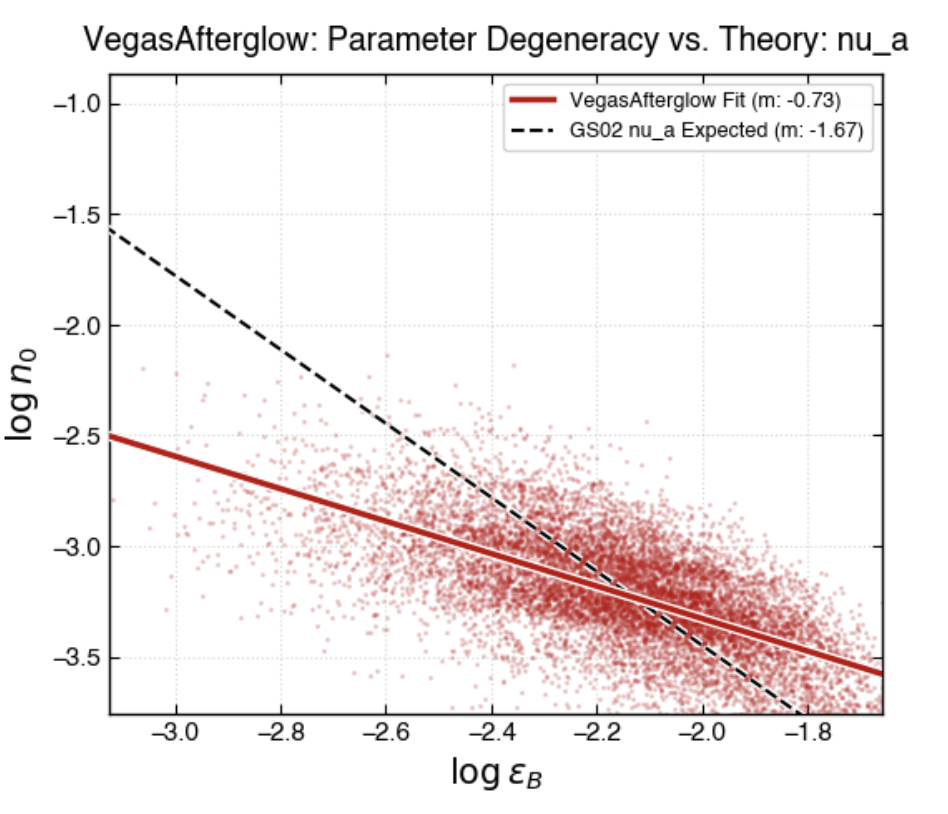
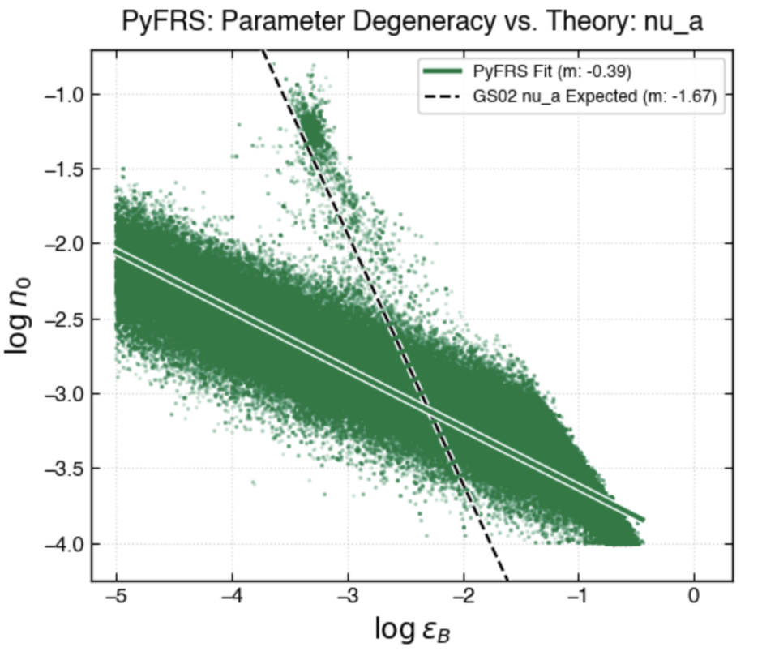
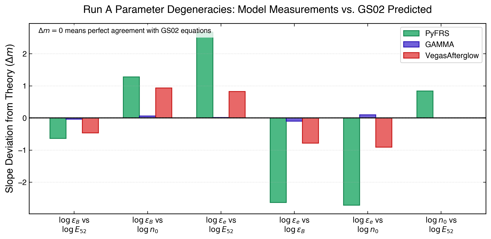
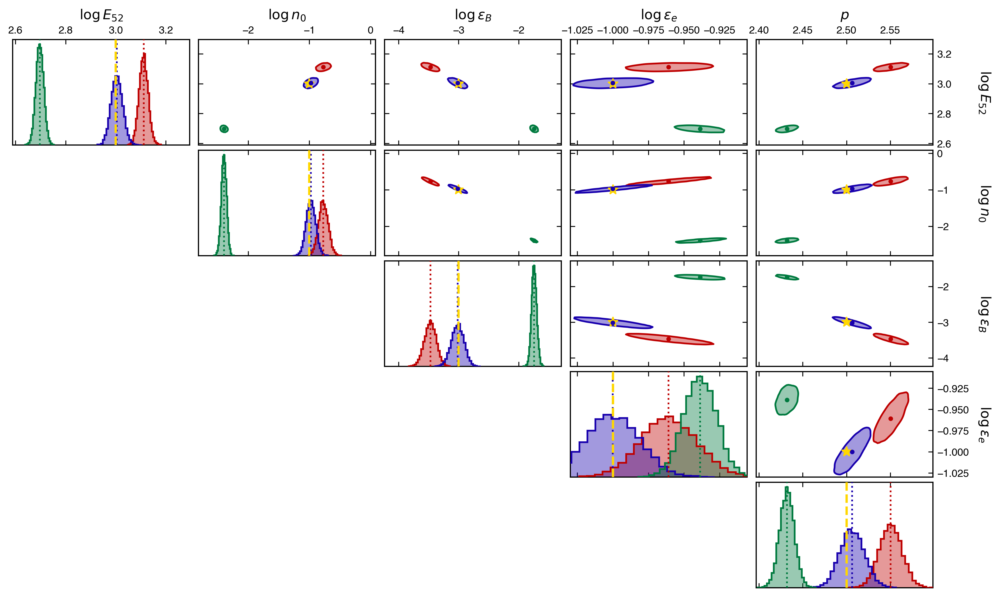

Theoretical and computational work in astrophysics, dense matter, and numerical modeling.
At the University of Notre Dame, I use the GR1D hydrodynamics code to study how a first-order transition from hadronic matter to quark matter can affect core-collapse supernova evolution and explodability.
Our simulations use solar-metallicity progenitors spanning 14-40 M⊙ and investigate the effects of neutrino-heated turbulence through the STIR model. I also developed Python tools to convert hybrid equation-of-state tables from the CompOSE database into the format, definitions, and units required by GR1D (SROEOS).
A major focus of the current work is the origin of radial oscillations associated with the phase transition. The simulations indicate that the oscillations arise when the quark-matter coexistence region develops an adiabatic index γ < 4/3 about halfway inside the proto-neutron star. The analysis identifies higher harmonics with a node near the region where the adiabatic index crosses 4/3.
The working manuscript also examines progenitor dependence, shock evolution, phase-space trajectories, and neutrino signals. With STIR turbulence included, many models explode before the secondary shock or quark-matter-induced oscillations develop, while a smaller subset exhibits the oscillatory behavior.


During a 2026 Research Experience for Undergraduates at the University of Utah, I worked with Dr. Tanmoy Laskar on parameter recovery in gamma-ray burst (GRB) afterglow modeling.
I benchmarked parameter recovery across three GRB afterglow modeling codes: GAMMA, PyFRS, and VegasAfterglow. I developed a model-agnostic Monte Carlo Markov Chain program to automate sampling and used it to study parameter degeneracies and differences in model fitting.





As part of the supernova project, I developed a Python-based model to investigate radial oscillations of neutron stars. The model combines a Tolman-Oppenheimer-Volkoff calculation with a Sturm-Liouville eigenvalue problem.
This project provided a complementary semi-analytic approach to understanding the oscillations observed in the hydrodynamical simulations and helped connect the numerical results to the underlying stellar structure.